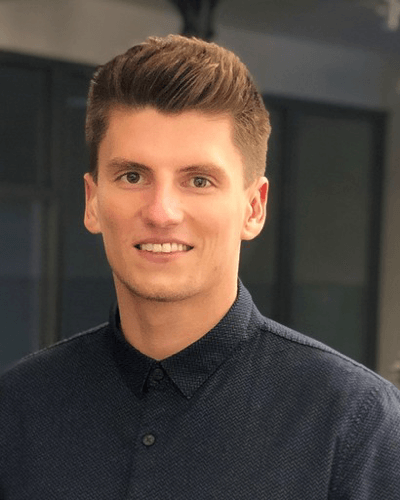

Design is teamwork.
And leadership is teamwork.
Therefore we want to apply as team for the vacant position as Directors of Design - Design Systems.

We are complementary counterparts. For each topic at least one of us is an expert and the other one has some experience.
With highly available excitement and enthusiasm. If one is down, the other is up.
Dear Mr. Young
In our last four years we have learned that we can solve many different user experience issues better than anyone else through pairing. Our strengths and weaknesses complement each other ideally. At Porsche, we have learned a lot over the past few years. And have been able to build and evolve an enterprise wide user experience culture for digital products from zero. Now we want to do this for a company that is on a higher digital maturity.
Even though our current working scope at Porsche is already highly focused on assuring the best possible User Experience – operating as Director(s) of Design – Design Systems at Zalando would give us the room to think even bigger and achieve possible strategic improvements for a much bigger scope.
To explain this a little bit more detailed: We closely work together as a team for 4 years at Porsche and we drive User Experience mindset and working culture within our digital product organization at scale. Mostly for customer facing websites and applications. Currently we are working on a UX Framework for Porsche which is based on three main pillars: firstly as a Leads of the ”UX Design Operations Team” we take over the responsibility to enable the product organization to follow the Porsche User Experience vision and strategy – through common design and working principles. As a team, we take ownership of the User Experience process and enablement to use the right tools and methods. Secondly, we established a design culture at Porsche by taking responsibility of the worldwide UX Community with more than a 100 designers. Within guild meetings we share knowledge, success stories and also empower collaboration. Furthermore we introduced the UX academy, where teams are educated in different UX related topics, e.g. articulating design decisions or the usage of a holistic Porsche customer journey. And thirdly, we build up a scalable Porsche Design System to ensure high qualitative code and design within our digital products that we are proud of: Porsche Design System
Personally, we gathered a lot of experience over the last years and we would also see ourselves as capable of taking the responsibility for this position. If you want to get more insights about our work, we recommend our Medium articles or Daniels podcast interview at Sports Maniac. Our curiosity for a new chapter in our life and the passion for the topic gives us again – the courage – to apply as a team.
We are looking forward to hearing from you and get to know us better in a personal conversation.
Our Expertise
Leading the UX Design Operations Team
- We lead a team of 14 external specialists in UX Design Ops: Developers, Designers, Researchers and Writers.
- We established a strategy to drive the UX maturity at Porsche with an UX framework for enterprise-wide digital product development.
- We continously explore and define standards, methods and processes to improve the Porsche Design Culture.
Hi, I am Marcel
I am now working for 10 years at Porsche AG, where I studied Business Administration and Engineering as a combined on-the-job training and academic studies with experiences in Supplier Management, Purchasing, Sales and Marketing. Both in Germany and for 6 months as Marketing Assistant Intern in Shanghai.
As self-employed freelancer since 2008, I already became enthusiastic for web development and design very early. Nowadays I am experienced in different areas of UX Design and Web Development - either using it myself or guide experts through my deep expertise. Especially by building up the Porsche UX Framework together with Daniel for the last 4 years at Porsche. With focus on the Porsche Design System as Product Owner and Product Manager.
And this is me, Daniel

My passion are strong brands. I want to help shape them and use the power to create user-centred products. I started my professional career at Borussia Dortmund in the successful years 2011-2014 in the online sector. There I was mainly responsible for the most important platforms BVB.de and Shop.BVB.de
After an emotionally influential time my journey went to Zuffenhausen. Here at Porsche I have been working for six years. I started in the online store department and now I am working together with Marcel in the UX Design Ops team.
My main focus is on UX Strategy and Operations and I support the Product Management, Product Owners and UXDs in the development of features.